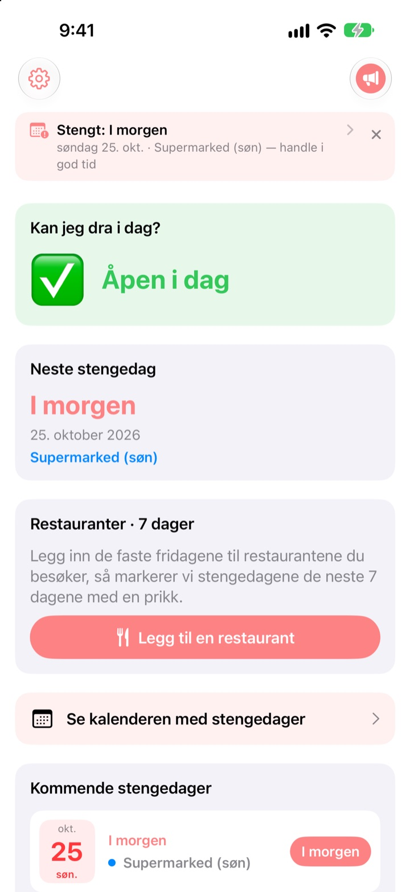
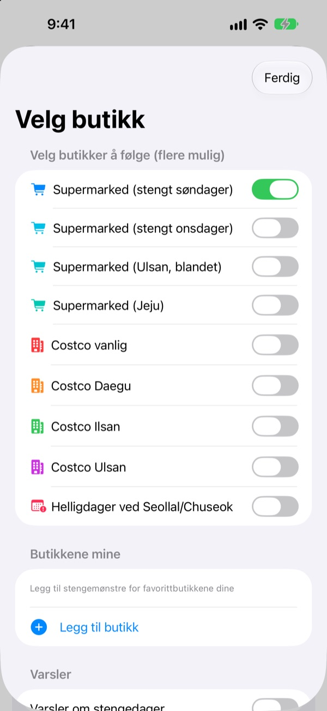
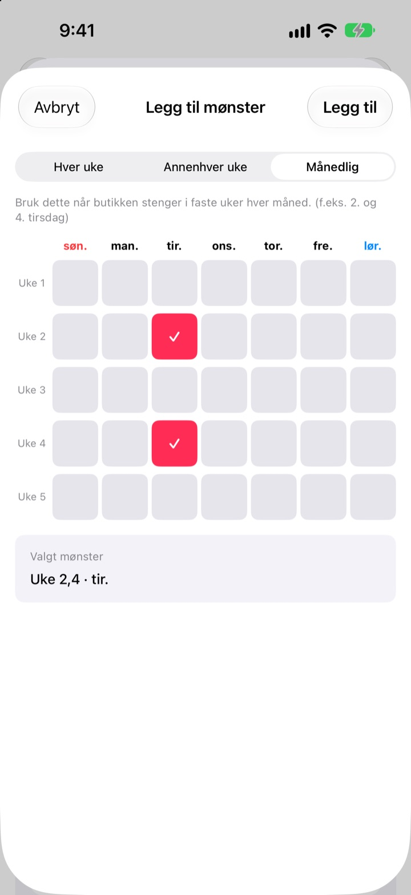
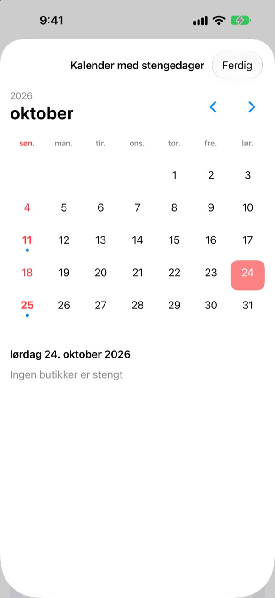
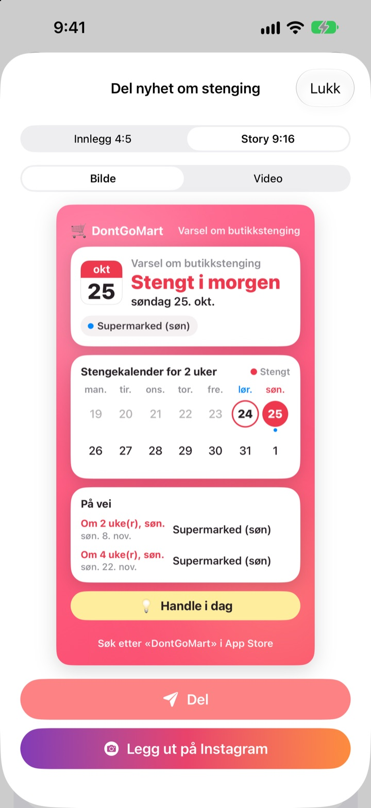

Før du drar og handler,
sjekk at det er åpent
Når du åpner appen, ser du først om butikkene dine har åpent i dag. Før hver stengedag får du en påminnelse, så du aldri står foran en låst dør igjen.
Alle funksjoner er gratis. Ingen konto, ingen reklame.

Prøv med din butikk
Velg en butikk og se med en gang om den har åpent i dag, og når den stenger neste gang. Beregnet etter de samme reglene som i appen.
Har du stått med handlelisten foran en stengt butikk?
Store supermarkeder i Korea må holde stengt to dager i måneden, men hvilke kommer an på hvor du bor. Oftest andre og fjerde søndag, andre steder onsdag, og Ulsan og Jeju har egne regler. Hos Costco kommer det an på varehuset. DontGoMart regner ut stengedagene etter reglene til butikkene dine og forteller deg først om du kan dra i dag.
Riktig for hver region
Velg butikker som stenger på søndager eller onsdager, eller regioner med egen plan som Ulsan og Jeju. Vanlige Costco-varehus og de i Daegu, Ilsan og Ulsan stilles inn hver for seg.
Stenging på selve Seollal og Chuseok vises også, og du kan følge flere butikker samtidig.

Nærbutikken og stamrestaurantene
Mangler en butikk på listen, legger du den til selv: hver uke, annenhver uke eller hvilke uker i måneden og hvilken dag den stenger.
For en restaurant limer du inn en lenke delt fra Naver Map eller velger et skjermbilde av infosiden, så fylles de faste fridagene ut av seg selv. Tekst på bilder leses bare på enheten din.

Påminnelser og widgeter, så du ikke glemmer
Få varsel 1, 2, 3 eller 7 dager før til tiden du velger, og dagen før en til om at i dag er en fin dag å handle.
Widgeter på Hjem-skjermen og låseskjermen viser neste stengedag, om det er åpent denne søndagen og de neste sju dagene for restaurantene dine. Kalenderen viser en hel måned.

Del det på ett kort
Gjør nyheten om til et kort med en kalender for to uker og et handletips, og send det til familiechatten. Formater for Instagram-innlegg og -story, og kort video.

Kom i gang på tre steg
- 1
Velg butikkene
Slå på butikkene og regionene der du handler. Så mange du vil.
- 2
Slå på påminnelser
Velg hvor mange dager før og når på dagen.
- 3
Legg til en widget
Sjekk fra Hjem-skjermen eller låseskjermen uten å åpne appen.
Stengeregler per butikk
- Supermarked (stengt søndager)
- 2. og 4. søndag · de fleste regioner
- Supermarked (stengt onsdager)
- 2. og 4. onsdag · deler av Gyeonggi, Cheongju
- Supermarked (Ulsan)
- 2. onsdag, 4. søndag
- Supermarked (Jeju)
- 2. fredag, 4. lørdag
- Costco vanlig
- 2. og 4. søndag
- Costco Daegu
- 2. og 4. mandag · Daegu, Daegu Innovation
- Costco Ilsan
- 2. og 4. onsdag
- Costco Ulsan
- 2. onsdag, 4. søndag
- Seollal, Chuseok
- stengt på selve dagen
Lovpålagte stengedager bestemmes av lokale myndigheter og kan endre seg. Stemmer noe ikke, skriv til adressen nedenfor.
Vanlige spørsmål
Stengedagene stemmer ikke.
Lovpålagte stengedager fastsettes av lokale forskrifter og varierer mellom regioner. Sjekk i Innstillinger at du har valgt riktig butikktype (stengt søndager, onsdager, Ulsan, Jeju osv.). Stemmer det fortsatt ikke, send oss butikknavn og område, så ser vi på det.
Butikken min er ikke på listen.
Legg den til som din egen butikk. Velg hver uke, annenhver uke eller hvilke uker i måneden og hvilken dag den stenger, for eksempel andre og fjerde søndag.
Fridagene til en restaurant ble fylt ut feil.
Ved import fra en Naver Map-lenke må restaurantens side oppgi faste fridager. Ved skjermbilde må teksten om stenging være synlig. Du kan rette alt før du lagrer.
Jeg får ingen påminnelser.
Sjekk at varsler er tillatt under Innstillinger > Varslinger > DontGoMart, og at påminnelsene er slått på i appen.
Widgeten oppdateres ikke.
Åpne appen én gang, så oppdateres widgetene. Hjelper ikke det, fjerner du widgeten og legger den til igjen.
Hva er tips?
Alle funksjoner i DontGoMart er gratis. Kaffe, kake og måltid er tips til utvikleren. Etterpå får du en takk og et merke som viser hvor mange ganger du har gitt.
Hvor spør jeg om betaling eller refusjon?
Apple håndterer kjøp i appen, så refusjon ber du om på reportaproblem.apple.com. Alt annet kan du skrive til oss om.
Hvordan behandles dataene mine?
Ingen kontoer, reklame eller sporingsverktøy, og tekst på skjermbilder leses bare på enheten din. Se personvernerklæringen nedenfor.
Spørsmål eller ideer? Skriv til hyunho.lee.1993@gmail.com. Vi svarer som regel innen en dag eller to.